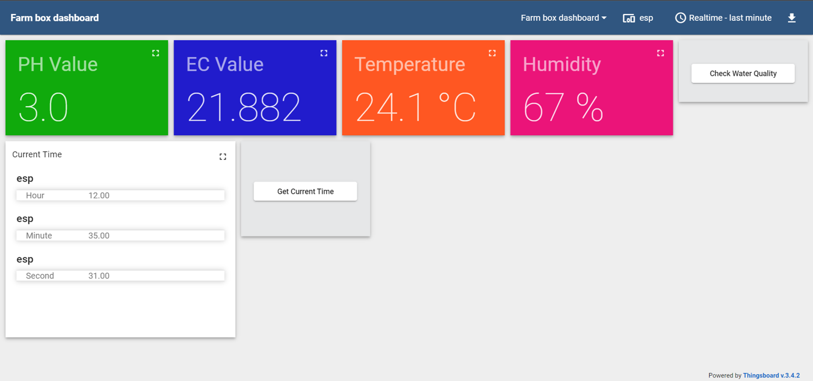
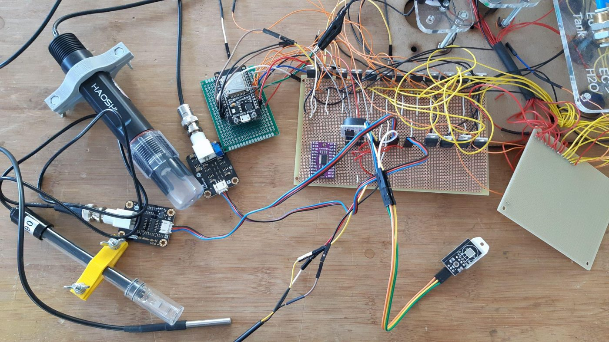
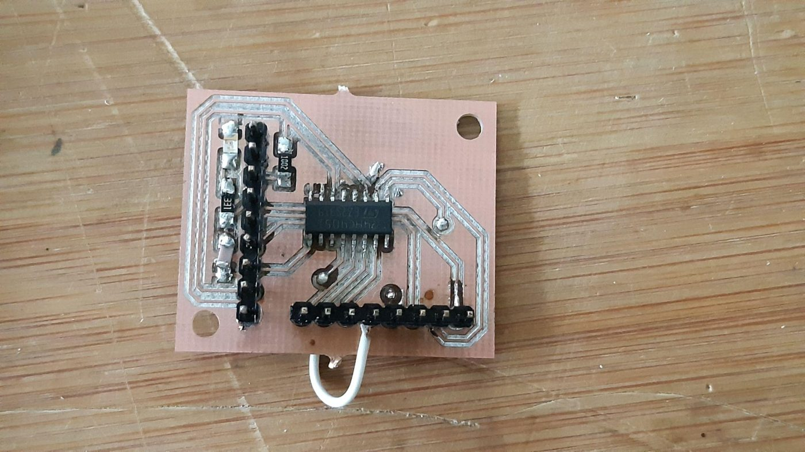
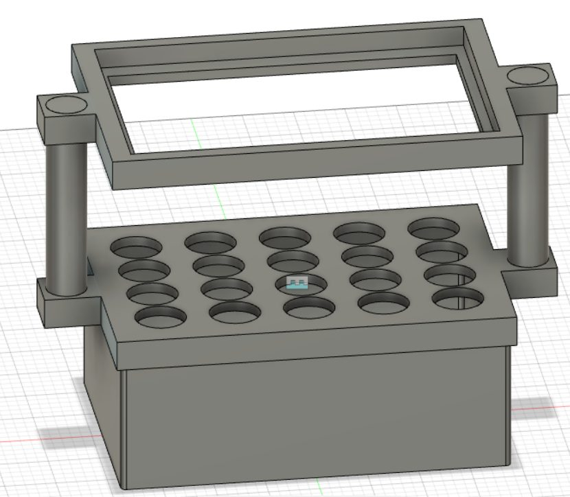
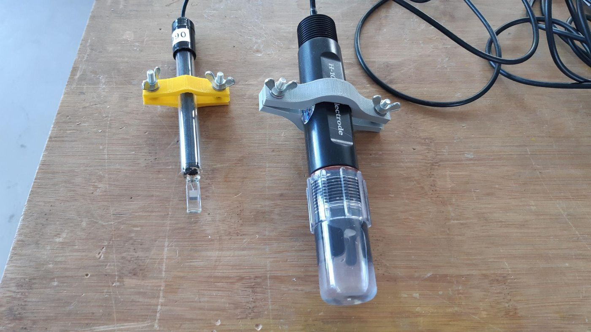
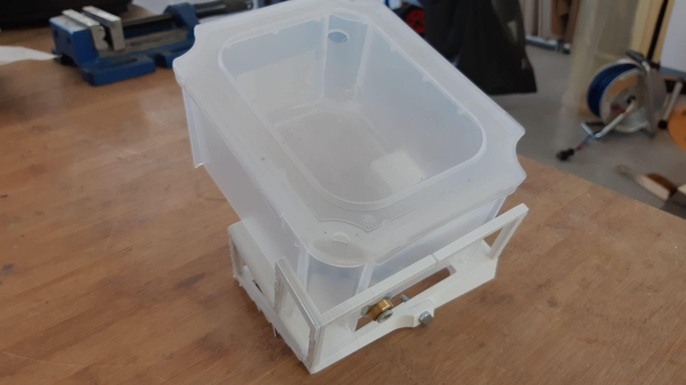
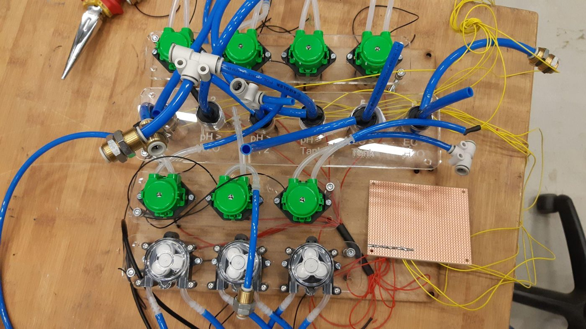

Overview
In a hydroponic farm the plant roots sit in water at all times, so the water's electrical conductivity (EC) and pH need constant monitoring. The goal was a system that runs these checks automatically, controls the grow lights, and can be monitored and triggered remotely through a web dashboard.

How the water-quality check works
The pH sensor has to be stored in potassium chloride (KCl) solution while the EC sensor must stay dry, so each sensor got its own box. One check cycle involves the following steps:
- Tank water is pumped into the pH sensor box and held for a few minutes while readings are taken.
- The water moves on to the EC sensor box for the EC reading, then is pumped back into the main tank.
- Both boxes are rinsed with distilled water.
- KCl solution is pumped into the pH box to store the sensor, then drained and rinsed again before the next check.
Sensors & calibration
- Calibrated the EC sensor with temperature compensation using 12.88 mS/cm and 1413 µS/cm reference solutions, and the pH sensor with pH 4 and pH 9 buffers.
- Ran a 3-day stability test with hourly readings timed by a DS3231 RTC; both sensors gave stable results.
- Connected the EC and pH sensors through an external ADC, which was more accurate than the ESP32's built-in ADC.
- When the original pH sensor became inaccurate, I switched to a new one and wrote my own calibration code, since the old library was incompatible.
- Compared an LDR with a phototransistor for light sensing and chose the LDR for its wider measurement range.
Firmware & dashboard
- Prototyped the pump and valve sequencing in a Tinkercad simulation (3 pumps, 3 valves, 6 MOSFETs), then rebuilt it on real hardware with an ESP32 and an RTC.
- The final ESP32 firmware uses the RTC to schedule the checks and to set how long each pump and valve runs.
- It also tracks the light hours the plants get from daylight and switches on the LEDs if they haven't reached the daily minimum.
- During each check it sends the EC, pH, temperature and humidity readings to a ThingsBoard dashboard, which also has a button to start a check remotely.
- Built a sample ESP32 + ThingsBoard project with a step-by-step guide, so others at the FabLab could reuse the setup.

Electronics
- Compared relays, transistors and MOSFETs for switching the 12 V pumps and valves, and chose MOSFETs for their power handling, small size and switching speed.
- Soldered the control electronics on perfboards: 15 MOSFET channels for 10 pumps and 5 valves, sensor connections and a carrier board for the ESP32.
- The ESP32 didn't have enough pins for every device, so I first tried an Arduino Uno as a UART port expander. I then designed a 74HC4051 multiplexer board in KiCad (double-sided), produced it on a PCB milling machine, soldered it and tested it.


Mechanical design
- Designed the desktop farm in Fusion 360: a tank sized to fit standard store-bought boxes, a lid holding the plant containers, and an LED holder above it.
- Designed the sensor box and sensor clamps. I checked the fit with a laser-cut prototype, then 3D-printed the final version with M4 nut slots to adjust the grip.
- Solved residual water (about 2 cm) left in the sensor box by moving the drain to a side corner and designing a tilted 3D-printed stand.



